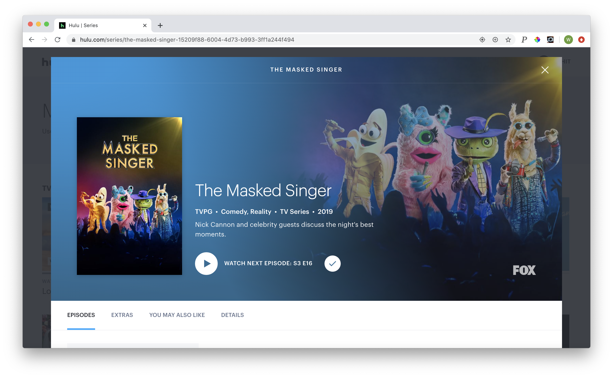
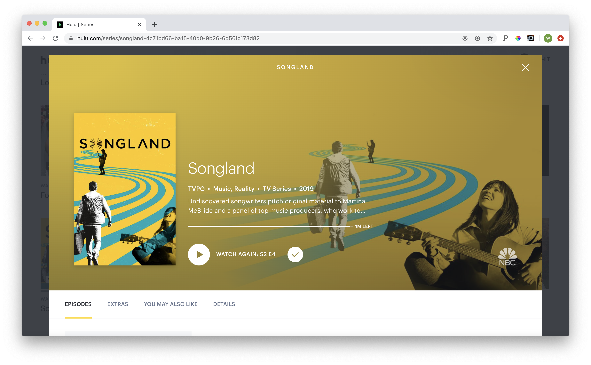

Love Island
It’s been two months of quarantine and I’ve consumed 123 episodes of this absurd show.
I’m not sure if it’s the chaos, the staged-ness, or the personalities that make this show so mind-numbingly addictive,
but I would 10 out of 10 recommend.
Warning: brain cells may be lost in the viewing of this show.
The Voice
Do you like hearing beautiful voices sing great music? Do you like John Legend? Do you like to shed a tear at dramatized sob stories?
Do you like watching people achieve their dreams? This is the reality show for you.

The Masked Singer
Is your brain filled with too much useless pop culture knowledge you don’t know what to do with? Do you like riddles and solving mysteries?
Can you put up with overkill cheesiness? Have you ever wanted to watch celebrities dress up as random fruits and animals and serenade you?
This will fulfill your very specific desires.

Songland
Can you tell I have a thing for singing competition shows? Well if you, too, love singing competition shows, this is one of my favorites.
Aspiring songwriters collaborate with the biggest industry professionals in songwriting to pitch a song to some of the biggest artists
today. The best part is that the artists actually do make whichever song they like the most, so you get to see popular songs come
together from start to finish.